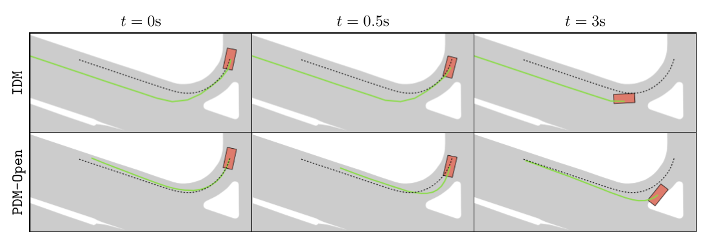
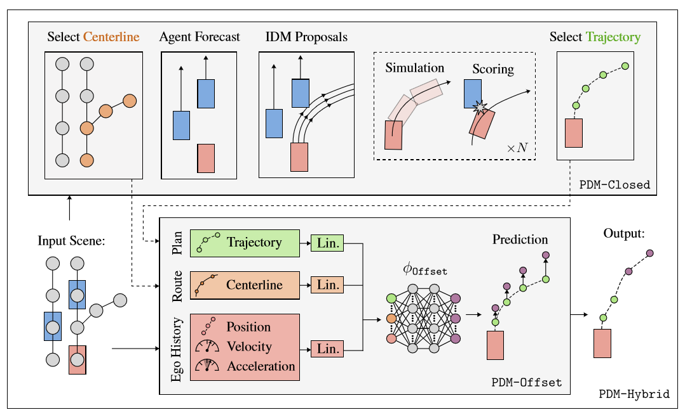

Daniel Dauner1,2、Marcel Hallgarten1,3、Andreas Geiger1,2、Kashyap Chitta1,2
1University of Tübingen 2Tübingen AI Center 3Robert Bosch GmbH
https://github.com/autonomousvision/tuplan_garage
arXiv:2306.07962v2 [cs.RO]、2023年11月2日／7th Conference on Robot Learning（CoRL 2023）、Atlanta, USA
翻訳について：原文 PDF は
21_PDM_2306.07962.pdf（全 14 ページ）。本文、図の説明、図中ラベル、表、脚注、付録を訳出し、論文タイトルと参考文献は原文のまま掲載。図は原図を掲載し、英語ラベルの日本語訳を併記した。数式・数値・引用番号・コードの識別子は原文を維持。原文の記述に関する補足は「訳注」と明示し、本文と区別している。
nuPlan の公開は、車両の運動計画研究における新時代の幕開けを告げるものである。nuPlan は、精密な短期計画と長期の自車予測（ego-forecasting）の両方を要求する、初の大規模な実世界データセットと評価方式を提供する。既存のシステムは、両方の要件を同時に満たすことに苦戦している。実際、我々はこれらのタスクが根本的に食い違っており、独立に扱うべきであることを見いだした。さらに我々は、この分野におけるクローズドループ計画の現状を評価し、複雑な実世界シナリオにおける学習ベース手法の限界と、車線グラフ探索アルゴリズムによる中心線選択のような単純なルールベースの事前知識の価値を明らかにする。より驚くべきことに、オープンループのサブタスクでは、この中心線のみをシーンコンテキストとして用いる（すなわち、地図や他のエージェントに関するすべての情報を無視する）ときに最良の結果が得られることを観察した。これらの知見を組み合わせて、我々は極めて単純かつ効率的なプランナを提案する。このプランナは広範な競合手法を上回り、nuPlan 計画チャレンジ 2023 で優勝した。
キーワード：運動計画、自動運転、データ駆動シミュレーション
車両の運動計画研究において学習ベースのシステムは成功を収めているものの［1, 2, 3, 4, 5］、ベンチマーク用の標準化された大規模データセットがないことが、研究から応用への移行を妨げている［6, 7, 8］。最近公開された nuPlan データセットとシミュレータ［9］は、1300 時間分の実世界の車両運動データの集合であり、この状況を変えた。これにより、手作業による設計の労力削減とスケーラビリティの向上が期待される新世代の学習型運動プランナの開発が可能になった。この新しいベンチマークを用いて、我々は車両運動計画のための大規模でオープンソースのデータ駆動シミュレータ上で、初めての厳密な実証的分析を行う。分析には最先端（SoTA）プランナの包括的な集合［10, 11, 12］が含まれ、公式の評価指標を用いる。我々の分析はいくつかの驚くべき知見をもたらす。
オープンループ評価とクローズドループ評価は食い違っている。多くの学習型プランナは、望ましい目標位置を条件として自車の将来の運動を予測するという教師あり学習タスクによって訓練される。我々はこの設定を自車予測（ego-forecasting）と呼ぶ［2, 3, 13, 14］。nuPlan では、プランナは 2 通りの方法で評価できる。(1) 距離ベースの指標を用いて自車予測の精度を測るオープンループ評価、または (2) 進捗や衝突率などの指標を用いてシミュレーション内での実際の運転性能を評価するクローズドループ評価である。オープンループ評価は動的なフィードバックを欠いており、単純な CARLA シミュレータ上で以前に示されたように［15, 16］、クローズドループ運転との相関がほとんどないことがある。我々の主要な貢献は、両評価方式の間の負の相関を明らかにした点にある。学習型プランナは自車予測に優れるが、安全なクローズドループ計画の作成には苦戦する。一方、ルールベースのプランナは逆の傾向を示す。
ルールベースの計画は汎化する。驚くべきことに、20 年以上前に確立されたルールベースの計画ベースライン［17］が、我々のベンチマークにおけるクローズドループ評価指標ですべての SoTA 学習ベース手法を上回ることを見いだした。これは、学習型プランナに関する多くの研究で用いられている「ルールベースの計画は汎化に困難を抱える」という一般的な動機づけの主張と矛盾する。
これはこれまで、より単純なベンチマークでのみ検証されていた［4, 10, 11］。その結果、学習型計画に関する現在の研究の多くは他の学習型手法とのみ比較し、ルールベースのベースラインを無視している［3, 5, 18］。
自車予測には中心線さえあればよい。我々は、シーン内の他のエージェントに関する入力を一切取り込まず、望ましい経路の中心線表現が与えられたもとで自車状態を外挿するだけの素朴な学習型計画ベースラインを実装した。このベースラインは、我々のベンチマークにおけるオープンループ評価で新たな SoTA を樹立する。これは、先行研究［10, 11, 12］で中心的な研究対象となってきた複雑なシーン表現（例えば車線グラフ、ベクトル化地図、ラスタ化地図、トークン化された物体）を必要としない。これらの先行研究はいずれも、単純な中心線のみの表現をベースラインとして検討していなかった。おそらくその並外れた単純さのためであろう。
我々の貢献は以下のとおりである。(1) 計画におけるオープンループ評価方式とクローズドループ評価方式の食い違いを示し、分析する。(2) リアルタイム動作が可能な IDM［17］の軽量な拡張を提案し、最先端のクローズドループ性能を達成する。(3) 現在の動的状態と中心線のみを条件とするオープンループプランナで実験を行い、複雑な入力表現を持つ高度なモデルを上回ることを示す。(4) 両モデルを組み合わせたハイブリッドプランナにより、24 の他の（多くは学習ベースの）競合手法を上回り、nuPlan チャレンジ 2023 で優勝を勝ち取った単純なベースラインを確立する。
ルールベースの計画。ルールベースのプランナは、構造化され解釈可能な意思決定の枠組みを提供する［17, 19, 20, 21, 22, 23, 24, 25, 26］。これらは明示的なルールを用いて自動運転車の挙動を決定する（例：物体が真正面にあればブレーキをかける）。ルールベース計画における先駆的な手法は Intelligent Driver Model（IDM［17］）であり、安全な車間距離を保ちながら交通中の先行車に追従するよう設計されている。高速道路での車線変更を可能にすることに焦点を当てた IDM の拡張も存在する［27］。しかし、それは本研究の目的ではない。代わりに我々は、異なるハイパーパラメータを持つ複数の方策を実行し、それらをスコアリングして最良の選択肢を選ぶことで IDM を拡張する。
先行研究では、ルールベースの意思決定を学習済みコンポーネントと組み合わせることも行われている。例えば、学習済みのエージェント予測［28］、アフォーダンス指標［23, 24］、コストベースの模倣学習［4, 29, 30, 31, 32］、あるいはルールベースの安全フィルタリングを伴う学習ベースの計画［33］との組み合わせである。これらのハイブリッドプランナは将来の環境状態を予測することが多く、それにより情報に基づいた、状況に応じた運転判断が可能になる。この予測は、各アクタについて軌道を決定するエージェント中心型［34, 35, 36］と、占有マップやコストマップを用いる環境中心型［4, 31, 30, 29, 37, 38］のいずれかである。さらに、予測を自車の計画で条件づけ、シーンの将来に対する自車の影響をモデル化することもできる［39, 40, 41, 42］。我々は既存手法よりもかなり単純なエージェント中心型の予測モジュールを採用しており、新たに公開された nuPlan フレームワークにおける出発点として利用できる。
自車予測。予測的計画とは異なり、自車予測手法は観測データを用いて将来の軌道を直接決定する。自車予測の手法には、LiDAR スキャン［44, 45］、RGB 画像［46, 47, 48, 49, 14, 50］、あるいはその両方［13, 51, 5, 52］を利用するエンドツーエンド手法［43］と、鳥瞰図（BEV）グリッドや状態ベクトルのような低次元入力を用いるモジュール型手法［24, 53, 11, 54, 55, 56］の両方がある。同時期の研究では、現在の動的状態を入力とする素朴な MLP を導入し、シーンコンテキストの入力なしで nuScenes データセット［57］において競争力のある自車予測結果を得ている［58］。我々の知見はこれらの結果を補完するものであり、難易度の高い 2023 年 nuPlan チャレンジのシナリオのテスト分布［9］において長期（8 秒）の自車予測を評価する点で異なる。この設定では、シーンコンテキストを完全に取り除くこと（［58］のように）は有害であり、一方でコンテキストの単純な中心線表現があれば強力なオープンループ性能に十分であることを示す。
本節では、データ駆動シミュレータ nuPlan［9］に関する背景を述べる。予備実験のための 2 つのベースラインを説明し、自車予測と計画はしばしば関連したタスクと見なされるものの、nuPlan 上での定義のもとではうまく整合していないことを示す。一方のタスクでの改善は、しばしば他方のタスクでの劣化につながりうる。

図1：計画と自車予測。nuPlan のシナリオを示す。走行可能領域を灰色で、元の人間の軌道を黒の破線で示している。各スナップショットでは、自車エージェントとその予測を表示している。（左）IDM の予測（ルールベースの中心線に拘束される）と人間の軌道との間に大きなずれがあり、その結果オープンループスコアが低くなっている。（中央＋右）シミュレーション開始から 0.5 秒後、学習型の PDM-Open プランナは自身の誤差を外挿し、最終的に道路から逸脱して、クローズドループスコアが最適でなくなる。
nuPlan。nuPlan シミュレータは、一般公開された初の実世界計画ベンチマークであり、運動プランナの迅速なプロトタイピングと試験を可能にする。nuPlan は、データ駆動シミュレーション［59, 60, 61, 62, 63, 64, 65］により、実世界の運転環境にできる限り近いシミュレーション環境を構築する。この手法は、1,300 時間分の実世界走行からなる事前記録データセットから、道路地図、交通パターン、物体の属性（位置、向き、速度）を抽出する。これらの要素を用いてシナリオを初期化する。シナリオはオープンループおよびクローズドループの運転性能を評価するための 15 秒間のシミュレーションである。したがって、シミュレーションにおいて我々の手法は詳細な HD 地図情報と真値の知覚へのアクセスに依存する。すなわち、自己位置推定の誤差、地図の不完全さ、誤検出は考慮されない。オープンループシミュレーションでは、ログ全体が（自車と他のアクタの両方について）単に再生される。逆に、クローズドループシミュレーションでは、自車は試験対象のプランナの制御下で動作する。クローズドループシミュレーションには 2 つの版がある。他のすべてのアクタが元の軌道に沿って再生される非反応型（non-reactive）と、他の車両が IDM プランナ［17］を用いる反応型（reactive）である。IDM については以下で詳述する。
評価指標。nuPlan は 3 つの公式評価指標を提供する。オープンループスコア（OLS）、非反応型クローズドループスコア（CLS-NR）、反応型クローズドループスコア（CLS-R）である。CLS-NR と CLS-R は同一の方法で計算されるが、背景交通の挙動が異なる。各スコアはサブスコアの重み付き平均であり、それに一連のペナルティが乗じられる。OLS では、サブスコアは長い期間（8 秒）にわたる変位誤差と方位誤差を、平均値と最終値の両方について考慮する。さらに、予測誤差がしきい値を超えると、ペナルティによりそのシナリオの OLS スコアはゼロになる。同様に、CLS のサブスコアは、衝突余裕時間（time-to-collision）、エキスパートの経路に沿った進捗、制限速度の遵守、快適性からなる。CLS の乗算的ペナルティは、過失のある衝突、走行可能領域または走行方向の違反、進捗がないことである。これらのペナルティは CLS を大幅に低下させ、例えば車両と衝突した場合には、ほとんどの場合そのシナリオのスコアはゼロになる。特筆すべきは、CLS は一貫した長期計画よりも主に短期の行動に依存している点である。すべてのスコア（OLS/CLS を含む）は 0 から 100 の範囲をとり、高いほど良い。nuPlan の評価指標は構成が込み入っているため、詳細な説明は補足資料を参照されたい。
Intelligent Driver Model。単純な計画ベースラインである IDM［17］は、nuPlan の CLS-R 評価において自車以外の車両をシミュレートするだけでなく、自車の計画のベースラインとしても機能する。nuPlan の地図はグラフとして提供され、中心線のセグメントがノードとして機能する。グラフ探索アルゴリズムによって追従すべきノードの集合を選んだ後、IDM は選択された中心線に沿った縦方向の軌道を推論する。中心線に沿った現在の縦方向位置 \(x\)、速度 \(v\)、先行車までの距離 \(s\) が与えられると、次の方策を反復的に適用して縦方向の加速度を計算する。
\[ \frac{\mathrm{d}v}{\mathrm{d}t} = {\color{#d9534f}a}\left(1 - \left(\frac{v}{\color{#d9534f}v_0}\right)^{\color{#d9534f}\delta} - \left(\frac{\color{#d9534f}s^*}{s}\right)^2\right). \tag{1} \]
加速度の上限 \(a\)、目標速度 \(v_0\)、安全マージン \(s^*\)、指数 \(\delta\) は手作業で選択される。直観的には、この方策は、速度がすでに \(v_0\) に近いか、先行車が \(s^*\) しか離れていない場合を除いて、加速度 \(a\) を用いる。追加の詳細と、我々が実際に選んだハイパーパラメータは補足資料に記載している。
中心線を条件とする自車予測。ここで我々は Predictive Driver Model (Open)、すなわち PDM-Open を提案する。これは将来のウェイポイントを予測するよう設計された単純な多層パーセプトロン（MLP）である。この MLP への入力は、IDM によって抽出された中心線（\(\mathbf{c}\)）と自車の履歴（\(\mathbf{h}\)）である。nuPlan で観測される高速（最大 15 m/s に達する）と自車予測のホライズン（8 秒に及ぶ）に対応するため、中心線は 1 メートルの解像度で長さ 120 メートルまでサンプリングされる。一方、自車の履歴は、過去 2 秒間の車両の位置、速度、加速度を 5Hz のレートでサンプリングしたものを含む。\(\mathbf{c}\) と \(\mathbf{h}\) はいずれもサイズ 512 の特徴ベクトルに線形射影され、連結されて、2 つの 512 次元隠れ層を持つ MLP \(\phi_{\texttt{Open}}\) に入力される。出力は 0.5 秒間隔の 8 秒ホライズンの将来ウェイポイントであり、\(\mathbf{w}_{\texttt{Open}} = \phi_{\texttt{Open}}(\mathbf{c}, \mathbf{h})\) と表される。モデルは 177k サンプルからなる我々の訓練データセット（第 4 節で説明）上で \(L_1\) 損失を用いて訓練される。設計上、PDM-Open は既存の学習型プランナ［10, 12］よりもかなり単純である。
| 手法 | 中心線 | 履歴 | CLS-R ↑ | CLS-NR ↑ | OLS ↑ | |
|---|---|---|---|---|---|---|
IDM［17］ | \(a = 1.0\) | ✓ | - | 77 | 76 | 38 |
| \(a = 0.1\) | ✓ | - | 54 | 66 | 48 | |
PDM-Open | - | - | 51 | 50 | 69 | |
| - | ✓ | 38 | 34 | 72 | ||
| ✓ | - | 54 | 53 | 85 | ||
| ✓ | ✓ | 54 | 50 | 86 |
表1：OLS と CLS のトレードオフ。異なる入力を用いた場合の nuPlan 上のベースラインのスコア。
OLS 対 CLS。表1では、nuPlan の評価指標を用いて IDM と PDM-Open のベースラインをベンチマークする。最大加速度の値が異なる 2 つの IDM 変種（既定の \(a = 1.0\mathrm{ms}^{-2}\) と \(a = 0.1\mathrm{ms}^{-2}\)）と、入力の異なる 4 つの PDM-Open 変種を示す。IDM の加速度を下げると OLS は向上するが、CLS には悪影響を与えることが観察される。IDM は強力なクローズドループ性能を示す一方、PDM-Open は、現在の自車状態のみを入力とする場合（1 行目）でさえ、オープンループで IDM を上回る。過去の自車状態（履歴）はわずかな改善しかもたらさず、CLS の低下を招く。最も重要なのは、中心線を加えることが自車予測性能に大きく寄与する点である。CLS と OLS の間の明確なトレードオフは、自車予測と計画の目標が食い違っていることを示している。現在の計画の文献で自車予測の利用が増えていることを考えると［3, 10, 12, 11］、nuPlan 上でのこの種の逆相関は予想外である。自車予測は運転性能にとって必須ではないが、nuPlan チャレンジは高い OLS と CLS の両方を要求する。
図1では、OLS 指標と CLS 指標の食い違いを図示している。描かれたシナリオでは、ルールベースの IDM は人間のドライバとは異なる車線を選択する。しかし、シミュレーション全体を通じて道路上の位置を保っている。その結果、CLS は高いが OLS は低くなる。逆に、学習型の PDM-Open は人間のドライバが選んだ車線に沿って予測を生成し、それにより高い OLS を得る。それにもかかわらず、シミュレーション中に短期予測の誤差が蓄積するため［66, 67］、モデルの軌道は走行可能領域から逸脱し、最終的に低い CLS に終わる。
ここで我々は、図2（上）に示すように、予測、候補生成、シミュレーション、スコアリング、選択を含む、モデル予測制御のいくつかの概念を取り入れることで IDM を拡張する。このモデルを PDM-Closed と呼ぶ。なお、最初のステップとして、IDM プランナと同様に、経路に沿った車線の系列を見つけてその中心線を抽出するためのグラフ探索は依然として必要である。

図2：アーキテクチャ。PDM-Closed は中心線を選択し、環境を予測し、さまざまな軌道候補を生成する。それらはシミュレートされ、軌道選択のためにスコアリングされる。PDM-Hybrid モジュールは、PDM-Closed の中心線と軌道、および自車の履歴を用いてオフセットを予測する。長期のウェイポイントのみを補正することで、クローズドループシミュレーションにおける学習済みモデルの影響を制限している。
図中ラベル：Select Centerline＝中心線の選択、Agent Forecast＝エージェント予測、IDM Proposals＝IDM による候補、Simulation＝シミュレーション、Scoring＝スコアリング、Select Trajectory＝軌道の選択、Input Scene＝入力シーン、Plan＝計画、Trajectory＝軌道、Route＝経路、Centerline＝中心線、Ego History＝自車の履歴、Position＝位置、Velocity＝速度、Acceleration＝加速度、Lin.＝線形層、Prediction＝予測、Output＝出力
予測。nuPlan では、シミュレータが車両や歩行者などの各動的エージェントについて向きベクトルと速度を提供する。我々は、単純ながら効果的な等速度予測［68, 69, 70］を、10Hz で 8 秒間のホライズン \(F\) にわたって用いる。
候補生成。IDM プランナを調整する過程で、目標速度のハイパーパラメータ（\(v_0\)）に単一の値を選ぶとトレードオフが生じることを観察した。さまざまなシナリオにわたって、攻撃的な運転挙動になるか、進捗が不十分になるかのいずれかであった。そこで我々は、5 つの異なる目標速度、すなわち指定された制限速度の \(\{20\%, 40\%, 60\%, 80\%, 100\%\}\) で IDM 方策を実行することにより、軌道候補の集合を生成する。各目標速度について、中心線から 3 通りの横方向オフセット（\(\pm 1\)m および 0m）を持つ候補も加え、合計 \(N = 15\) 個の候補を生成する。後続の段階での計算負荷を回避するため、候補のホライズンは \(H\) ステップに短縮されており、これは 10Hz で 4 秒に相当する。
シミュレーション。nuPlan における軌道は、LQR 制御器［71］から行動を反復的に取得し、キネマティック自転車モデル［72, 73］で自車を伝播させることでシミュレートされる。我々は同じパラメータと、この 2 段階パイプラインのより高速な再実装を用いて候補をシミュレートする。これにより、候補はクローズドループにおいて予想される動きに基づいて評価される。
スコアリング。シミュレートされた各候補は、交通規則の遵守、進捗、快適性を重視するようにスコアリングされる。横方向と縦方向の多様性を持つ候補を考慮することで、プランナはエージェント予測との衝突を回避でき、また制御器が意図した軌道を正確に追従できない場合に生じうるドリフトを補正できる。さらに、我々のスコアリング関数は nuPlan の評価指標によく似ている。追加の詳細については補足資料を参照されたい。
軌道選択。最後に、PDM-Closed は最高スコアの候補を選択し、対応する IDM 方策によって完全な予測ホライズン \(F\) まで延長する。最良の軌道が 2 秒以内に衝突すると予想される場合、出力は緊急ブレーキ操作で上書きされる。
長期ホライズンの精度の向上。PDM-Open の正確な自車予測能力を PDM-Closed の精密な短期行動と統合するため、ここで PDM のハイブリッド版、すなわち PDM-Hybrid を提案する。具体的には、図2（下）に示すように、PDM-Hybrid は学習済みモジュール PDM-Offset を用いて、PDM-Closed のウェイポイントに対するオフセットを予測する。
| 手法 | 表現 | CLS-R ↑ | CLS-NR ↑ | OLS ↑ | 時間 ↓ |
|---|---|---|---|---|---|
Urban Driver［10］ | Polygon | 50 | 53 | 82 | 64 |
GC-PGP［12］ | Graph | 55 | 59 | 83 | 100 |
PlanCNN［11］ | Raster | 72 | 73 | 64 | 43 |
IDM［17］ | Centerline | 77 | 76 | 38 | 27 |
PDM-Open | Centerline | 54 | 50 | 86 | 7 |
PDM-Closed | Centerline | 92 | 93 | 42 | 91 |
PDM-Hybrid | Centerline | 92 | 93 | 84 | 96 |
PDM-Hybrid* | Graph | 92 | 93 | 84 | 172 |
| Log Replay | GT | 80 | 94 | 100 | - |
表2：Val14 ベンチマーク。複数のプランナについて、反応型／非反応型のクローズドループスコア（CLS-R/CLS-NR）、オープンループスコア（OLS）、ミリ秒単位の実行時間を示す。各プランナが用いる入力表現（Rep.）も明記する。PDM-Hybrid は強力な自車予測（OLS）と計画（CLS）を達成している。*これは PDM-Closed と GC-PGP［12］を組み合わせた PDM-Hybrid の予備版であり、我々のオンラインリーダーボードへの提出（表3）に用いたものである。
表中ラベル：Polygon＝ポリゴン、Graph＝グラフ、Raster＝ラスタ、Centerline＝中心線、Log Replay＝ログ再生、GT＝真値
実際には、nuPlan で用いられる LQR 制御器は、クローズドループで行動を決定する際に軌道の最初の 2 秒間のみに依存する。したがって、補正を長期のウェイポイント（すなわち既定では 2 秒より先。これを補正ホライズン \(C\) と呼ぶ）にのみ適用することで、PDM-Hybrid はクローズドループの計画性能を維持できる。最終的なプランナは（予測ホライズン \(F\) までの）ウェイポイント \(\{\mathbf{w}^t_{\texttt{Hybrid}}\}^F_{t=0}\) を出力し、それは次式で与えられる。
\[ \mathbf{w}^t_{\texttt{Hybrid}} = \mathbf{w}^t_{\texttt{Closed}} + \mathbb{1}_{[t \gt C]}\,\phi^t_{\texttt{Offset}}(\mathbf{w}_{\texttt{Closed}}, \mathbf{c}, \mathbf{h}). \tag{2} \]
ここで \(\mathbf{c}\) と \(\mathbf{h}\) は中心線と履歴である（PDM-Open の入力と同一）。\(\{\mathbf{w}^t_{\texttt{Closed}}\}^F_{t=0}\) はハイブリッド手法に加えられる PDM-Closed のウェイポイントであり、\(\phi_{\texttt{Offset}}\) は MLP である。そのアーキテクチャは、追加入力としての \(\mathbf{w}_{\texttt{Closed}}\) を受け入れるための線形射影が 1 つ追加されている点を除き、\(\phi_{\texttt{Open}}\) と同一である。
重要な点として、PDM-Hybrid は高いモジュール性を持つように設計されており、多様な要件が生じた際に個々のコンポーネントを代替のものに置き換えることができる。例えば、補足資料では別のオープンループモジュールを用いた結果を示す。全体の単純さを踏まえると、探求すべき興味深いアプローチの 1 つは、［34］に見られるように、モジュール型でありながら微分可能なアルゴリズムをコンポーネントとして組み込むことである。これらのモジュールを統一的なマルチタスクアーキテクチャ内に統合することを探るのも、もう 1 つの興味深い方向性である。こうした探求は今後の課題とする。
ここでは、我々が提案するベンチマークの概要を述べ、我々の手法の運転性能を示す。
Val14 ベンチマーク。我々は訓練と評価のための標準化されたデータ分割を提供する。訓練には nuPlan の全 70 種類のシナリオタイプを用い、タイプごとに最大 4k シナリオに制限した結果、約 177k の訓練シナリオとなる。評価には、リーダーボードで考慮される 14 種類のシナリオタイプについてそれぞれ 100 シナリオを用い、合計 1,118 シナリオとなる。わずかな不均衡（14 タイプすべてに 100 シナリオが利用可能なわけではない）があるものの、我々の検証分割はオンラインリーダーボードの評価と整合しており（表2と表3）、Val14 ベンチマークがオンラインテストセットの代理として適していることを裏付けている。
ベースライン。本研究では、計画に自車予測を採用する SoTA 手法をいくつか追加で含める。Urban Driver［10］は PointNet 層でポリゴンを符号化し、マルチヘッド注意機構ブロックの後に線形層で軌道を予測する。本研究ではオープンループ設定で訓練した Urban Driver の実装を用いる。GC-PGP［12］は、経路に制約された車線グラフの走査に基づいて軌道候補をクラスタリングし、最も尤もらしいクラスタ中心を返す。PlanCNN［11］は、自車状態の入力なしに、ラスタ化されたグリッド特徴から CNN を用いてウェイポイントを予測する。これはこの分野の先駆的研究である ChauffeurNet［8］といくつかの類似点を持つ。nuPlan コンペティションで優勝した PDM-Hybrid の予備版は、自車予測コンポーネントとして GC-PGP を用いており、これをベースラインとして含める。この版の完全な説明は補足資料に記載する。
結果。結果を表2に示す。PlanCNN は学習型プランナの中で最良の CLS を達成している。これはおそらく、入力から自車状態を除くという設計上の選択により、OLS と引き換えに CLS を向上させたためである。予測と計画においてグラフベースおよびベクトルベースのシーン表現がコミュニティで好まれる傾向が強まっているのとは裏腹に［74, 11, 75, 76］、これらの結果はクローズドループタスクにおいてラスタ表現に明確な不利がないことを示しており、PlanCNN は実行時間も短い。驚くべきことに、本研究で最も単純なルールベース手法である IDM は、最良の学習型プランナである PlanCNN を上回る。さらに、CLS の観点から IDM に対する PDM-Closed の優位性が観察される。第 3 節のアイデアの結果、76〜77 から 92〜93 へと改善している。驚くべきことに、PDM-Open は中心線と自車状態のみを入力として用い、わずか 7ms の実行時間で最高の OLS である 86 を達成する。補足資料でさらに詳しく述べるように、PDM-Open は長期ホライズンにわたる正確な車線追従において他の手法を上回ることが観察される。次に、PDM-Closed の OLS は 42 と不満足なものであるにもかかわらず、PDM-Hybrid は PDM-Closed と PDM-Open をうまく組み合わせている。PDM-Hybrid の中心線版とグラフ版は、我々の評価では同一のスコアを達成する。しかし、GC-PGP の代わりに PDM-Open を用いる最終的な中心線版のほうが推論時に効率的である。最後に、真値の自車将来軌道を出力するという特権的な手法（ログ再生）は完全な CLS を達成できない。その一因は、nuPlan フレームワークの LQR 制御器が与えられた軌道から時折ドリフトすることにある。PDM-Hybrid は、予想される制御器の結果に基づいて候補を評価することでこれを補償しており、その結果、クローズドループ評価においてログ再生と同等またはそれ以上の性能を示す。
| 手法 | CLS-R ↑ | CLS-NR ↑ | OLS ↑ | スコア ↑ |
|---|---|---|---|---|
PDM-Hybrid* | 93 | 93 | 83 | 90 |
| hoplan | 89 | 88 | 85 | 87 |
| pegasus_multi_path | 82 | 85 | 88 | 85 |
Urban Driver［10］ | 68 | 70 | 86 | 75 |
IDM［17］ | 72 | 75 | 29 | 59 |
表3：2023 nuPlan チャレンジ。
チャレンジ。2023 年の nuPlan チャレンジでは、PDM-Hybrid の予備版（グラフ版）が参加 25 チーム中 1 位となった。リーダーボードは CLS-R、CLS-NR、OLS の平均を考慮する。オープンループ性能はわずかに劣ったものの、クローズドループ性能は優れており、総合で SoTA のスコアとなった。残念ながら、リーダーボードが閉鎖されたため、GC-PGP をより単純な PDM-Open モジュールに置き換えた PDM-Hybrid の最終版（中心線版）はベンチマークできなかった。上位の競合手法はすべて、チャレンジで CLS 性能を高めるために、学習型の自車予測とルールベースの事後ソルバまたは後処理を組み合わせていた［77, 78, 79］。したがって、今後はハイブリッド手法がさらに増えると予想される。
重要な点として、我々の提出物については、Val14 ベンチマーク（表2）と公式リーダーボード（表3）の両方でほぼ同一のスコアが記録された。なお、リーダーボード上の Urban Driver と IDM の結果は nuPlan チームによって提供されたものであるため、表2の我々の実装とは異なる訓練データとハイパーパラメータを用いている可能性が高い。
アブレーション研究。表4のアブレーション研究により、我々の設計上の選択を掘り下げる。表4a は、補正ホライズン（\(C\)）を 0 秒から 3 秒まで変えたときの PDM-Hybrid の反応型クローズドループスコア（CLS-R）とオープンループスコア（OLS）を示す。ウェイポイント補正をすべてのウェイポイントに適用すると（すなわち \(C = 0\)）、OLS では PDM-Open を上回る（87 対 86、表2参照）が、既定値 \(C = 2\) と比べて CLS-R が大幅に低下する。一方、軌道のより先の時点から補正を開始すると（例えば \(C = 3\)）、CLS-R への影響は最小限であるものの、顕著な OLS の低下が生じる。
PDM-Closed（表4b）については、3 つの設定でベースのプランナと CLS-R および実行時間（ms）を比較する。中心線の横方向オフセットを除去した場合（「lat.」）、縦方向の IDM 候補を除去した場合（「lon.」）、環境予測を除去した場合（「cast.」）である。分析の結果、候補を除去すると CLS-R の有効性は下がるが、実行時間は短縮されることが明らかになった。候補の生成と評価に用いる予測を除外すると、性能は大きく低下する。しかし、実行時間はほぼ同一のままであり、単純な予測機構の有効性を示している。
PDM-Open（表4c）については、3 つの変種を試験する。より短い中心線（30m 対 120m）、より粗い中心線（10m 間隔 対 1m 間隔）、隠れ次元を縮小した（512 から 256 へ）より小さな MLP である。より小さな MLP と短縮した中心線長はいずれも性能低下を招くが、その影響は中心線をまったく考慮しない場合（表1、OLS=72）と比べると比較的小さい。一方、より粗い中心線の影響は無視できる程度である。
(a) PDM-Hybrid
| \(C\) | CLS-R ↑ | OLS ↑ |
|---|---|---|
| 0.0s | 58 | 87 |
| 2.0s | 92 | 84 |
| 2.5s | 92 | 84 |
| 3.0s | 92 | 72 |
(b) PDM-Closed
| 手法 | CLS-R ↑ | 時間 ↓ |
|---|---|---|
| ベース（Base） | 92 | 91 |
| 横方向なし（No lat.） | 89 | 55 |
| 縦方向なし（No lon.） | 88 | 64 |
| 予測なし（No cast.） | 86 | 90 |
(c) PDM-Open
| 手法 | OLS ↑ |
|---|---|
| ベースライン | 86 |
| より短い中心線 | 84 |
| より粗い中心線 | 86 |
| より小さな MLP | 84 |
表4：アブレーション研究。反応型クローズドループスコア（CLS-R）、オープンループスコア（OLS）、ミリ秒単位の実行時間を示す。(a) PDM-Hybrid の補正ホライズンの変更、(b) PDM-Closed のサブモジュールの無効化、(c) PDM-Open に対する入力とアーキテクチャの選択の影響を調べる。灰色で強調した既定の構成が最良のトレードオフを達成している。
ルールベースの計画は汎化が限られていると批判されることが多いが、我々の結果は、実世界での評価に最もよく似た nuPlan のクローズドループタスクにおいて強力な性能を示している。特筆すべきは、オープンループでの成功には部分的にクローズドループ性能とのトレードオフが必要となる点である。その結果、模倣学習で訓練された自車予測手法はクローズドループでの成績が振るわない。このことは、ルールベースのプランナが依然として有望であり、さらなる探求に値することを示唆している。同時に、そのままでは性能が低いことを踏まえると、nuPlan 上の模倣ベースの手法には改善の余地がある。
クローズドループ計画とオープンループ自車予測の長所を統合して、我々はハイブリッドモデルを提示する。しかし、これはクローズドループの運転性能を向上させるものではない。そうではなく、同一の運転操作を実行しながらオープンループ性能を高めるものである。我々は、精密なオープンループ自車予測を長期の計画目標を達成するための前提条件と見なすことは誤解を招くと結論づける。
解釈可能性や人間らしい挙動の評価における自車予測の潜在的な重要性を認めたうえで、我々はこの評価を、クローズドループ運転に関係する短いホライズン（例えば 2 秒）に絞ることを提案する。単峰的な 8 秒間の自車予測を要求する現在の nuPlan の OLS の定義は、データ駆動の交通シミュレーションにおける背景エージェントの目標設定や、計算資源のより良い配分（例えば自車が通過すると予想される領域での知覚や予測を優先する）といった別の用途にのみ有用である可能性がある。我々は、オープンループ指標を計画性能の主要な指標として用いることを推奨しない［18］。
限界。我々は確立された IDM モデルを大幅に改善したが、PDM は依然として車線変更操作を実行しない。車線変更を試みると、自車が 2 つの車線の間にあるときに衝突につながることが多く、nuPlan の評価指標では大きなペナルティとなる。PDM は HD 地図と精密なオフボード知覚［80, 9］に依存しているが、これらは実世界の運転状況では利用できない可能性がある。学習ベースの手法については実世界での展開が実証されているが［81, 33, 8］、ルールベースの手法にとっては依然として大きな課題である。さらに我々の実験では、保留されたテストセットを除き、未見の街や新しいシナリオタイプのような分布シフトに遭遇した際のモデルの汎化能力を特に評価していない。実験はすべて単一のシミュレータ nuPlan 上で行われた。したがって、nuPlan のデータ駆動シミュレーション手法に内在する限界を認識することが重要である。プランナが人間の運転ログよりも速く進むと、シミュレーション中に物体が自車の前に突然出現する。CLS-NR では、車両は自車エージェントを無視して現実で観測されたとおりに独立して動くため、過度に攻撃的な挙動につながる。逆に、CLS-R の背景エージェントは IDM に依存して中心線に厳密に従うため、非現実的に受動的な挙動につながる。より洗練された反応型環境を開発することは、今後の研究として高い価値があると考える。
結論。本論文では、学習ベースの車両運動計画において広く見られる誤解を明らかにした。我々の知見に基づき、IDM を基盤とし、それを学習型の自車予測コンポーネントと組み合わせた PDM-Hybrid を導入した。これは包括的な競合手法の集合を上回り、2023 年の nuPlan コンペティションで優勝を勝ち取った。
Andreas Geiger は、ERC Starting Grant LEGO-3D（850533）、BMWi のプロジェクト KI Delta Learning（プロジェクト番号 19A19013O）、および DFG EXC number 2064/1 - project number 390727645 の支援を受けた。Kashyap Chitta は、ドイツ連邦教育研究省（BMBF）：Tübingen AI Center, FKZ: 01IS18039A の支援を受けた。Kashyap Chitta を支援してくれた International Max Planck Research School for Intelligent Systems（IMPRS-IS）に感謝する。また、リーダーボードへの提出における技術的問題について助力してくれた Pat Karnchanachari と Gianmarco Bernasconi、校閲をしてくれた Niklas Hanselmann、有益な議論をしてくれた Andreas Zell に感謝する。
参考文献は原文のまま掲載した。